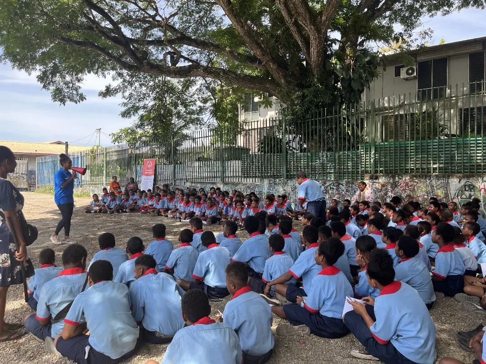
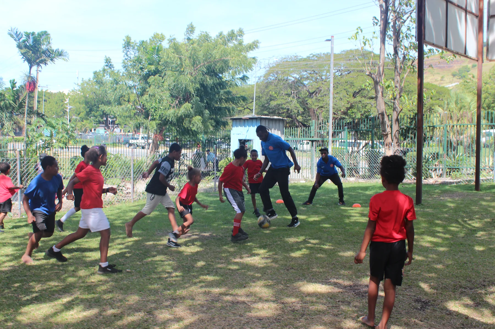
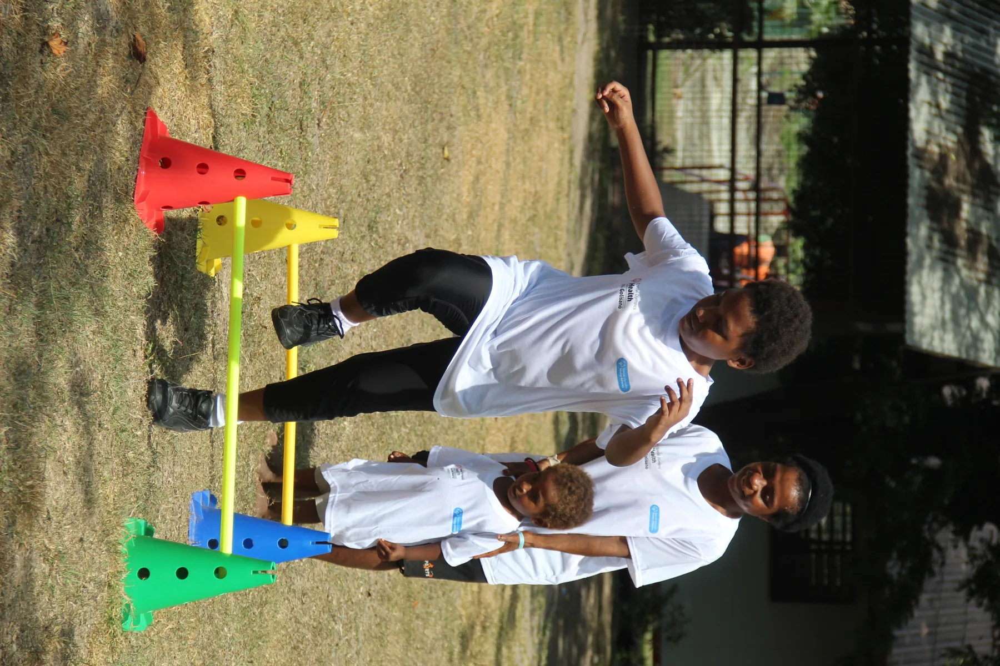
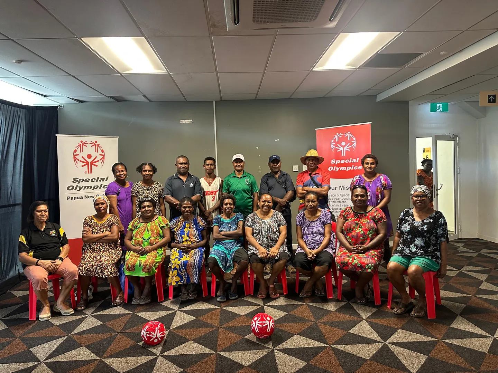
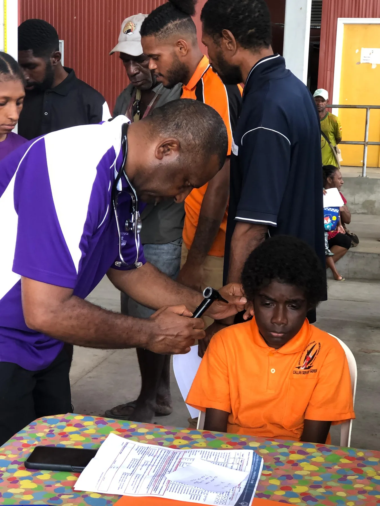
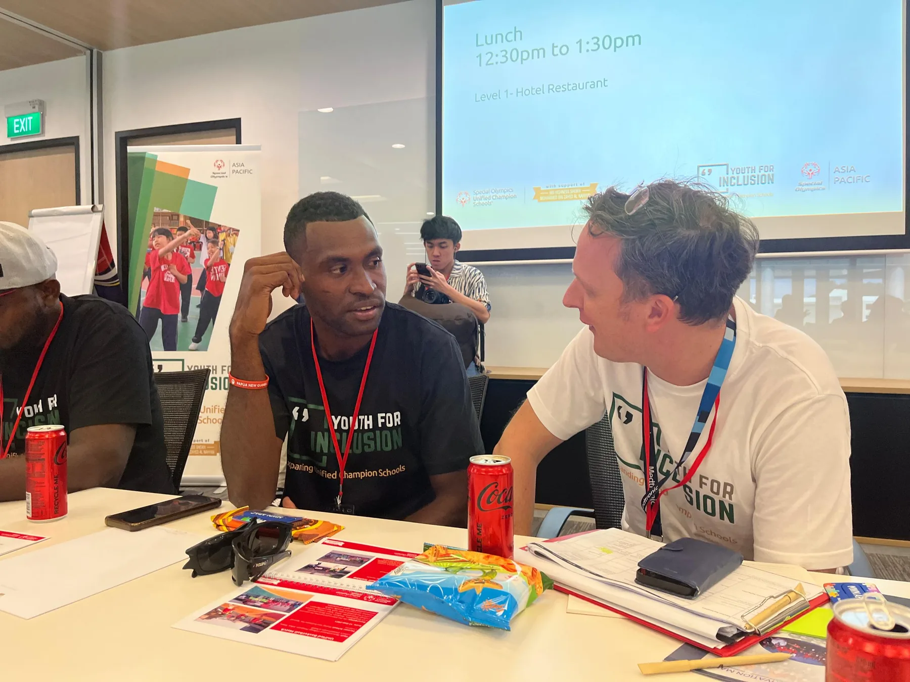
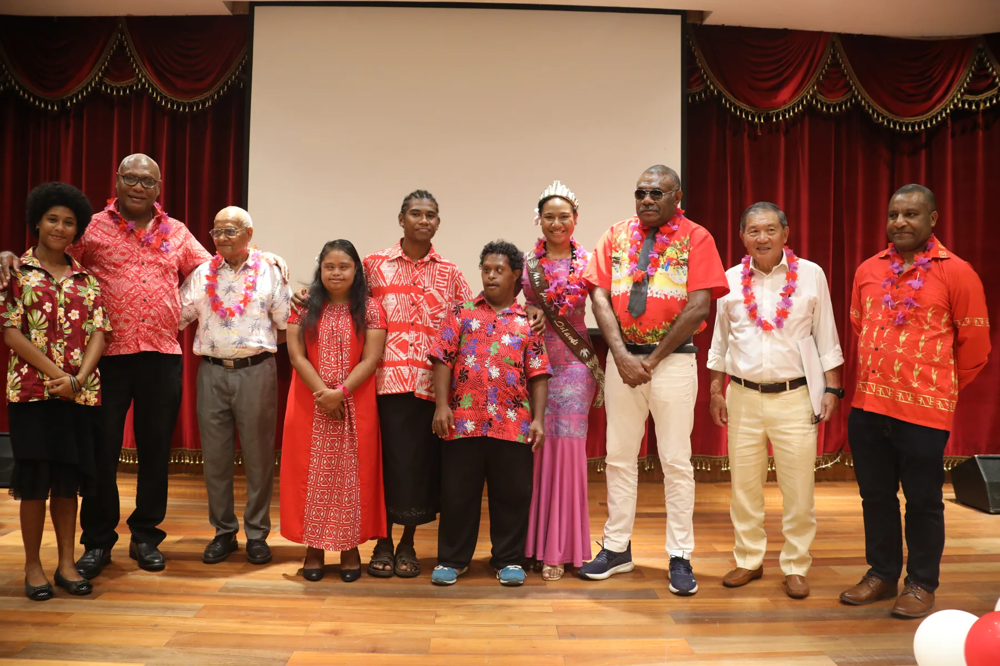
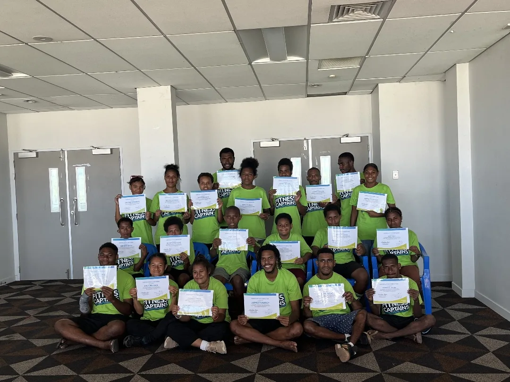
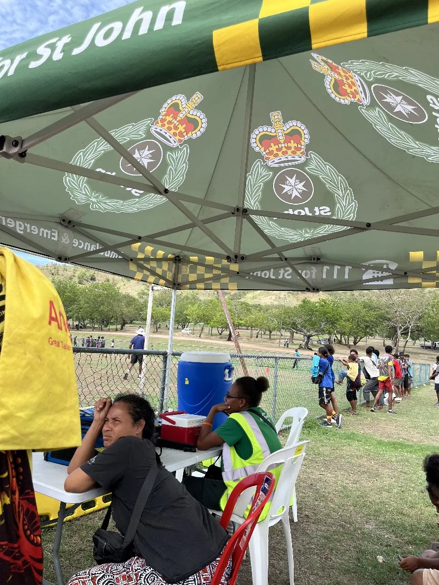

Meet the community
SPECIAL OLYMPICS · PAPUA NEW GUINEA
We create opportunities for people with intellectual disabilities to play, grow and lead through sport and an inclusive community.
WHAT WE DO
Meet the programs that bring athletes, families, coaches and young leaders together.

Train, compete and connect through inclusive sport.

Build movement skills through play and discovery.

Families learn, connect and lead together.

Make health and wellness more accessible.

Young people help shape inclusive communities.

Local actionOUR STORY
Across Papua New Guinea, athletes, families, volunteers and partners are making inclusive sport part of everyday community life. Every practice, conversation and shared celebration helps make belonging visible.
Learn about SOPNGLIFE AT SOPNG
From school visits to sports days, every gathering helps build connection and opportunity.



JOIN SOPNG
Bring your time, your skills or your organisation. Together, we can make more room for athletes.
LET’S TALK
Ask about programs, volunteering, events or partnership opportunities.
Contact our team